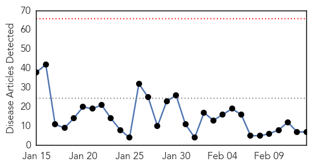
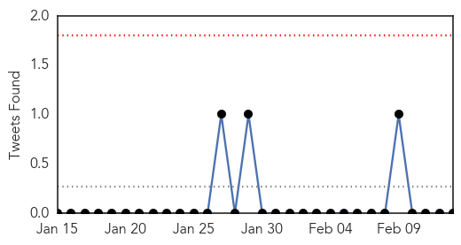
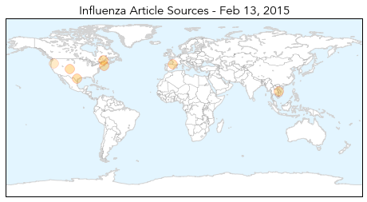
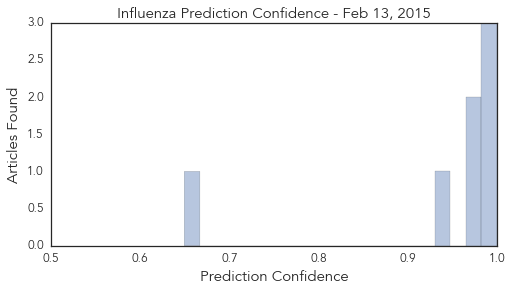

Toggle navigation
Early Warning
Daily Alerts
Influenza
Feb 13, 2015
Compare to:
-
Dengue Fever
Hemmorhagic Fever
Mold/Fungal Infection
Meningitis
Pertussis / Whooping Cough
Middle East Respiratory Syndrome
Cholera
Hepatitis
Chikungunya
Yellow Fever
Bubonic Plague
West Nile Virus
Swine Flu
Ebola
Measles
Unknown
Mumps
30 Day Trends
Web: 0
alerts
, 0
warnings
Twitter: 0
alerts
, 0
warnings
Top Articles:
1.000
FluWatch report: February 1 to February 7, 2015 (Week 5)
1.000
Schools report an increase in illness-related absences
0.999
Colorado sees record-high flu hospitalizations
0.977
Valley health officials gearing up to tackle flu season Medicine: An estimated 400,000 doses of vaccine to be handed out this year.
0.974
France in grip of flu epidemic as vaccine proves ineffective
0.946
Flu season: Missing the mark
0.649
Avian flu found in Deschutes County
Top Tweets:
No tweets found for Feb 13, 2015
Web/News Articles

Tweets

Article Locations

Article Confidences
